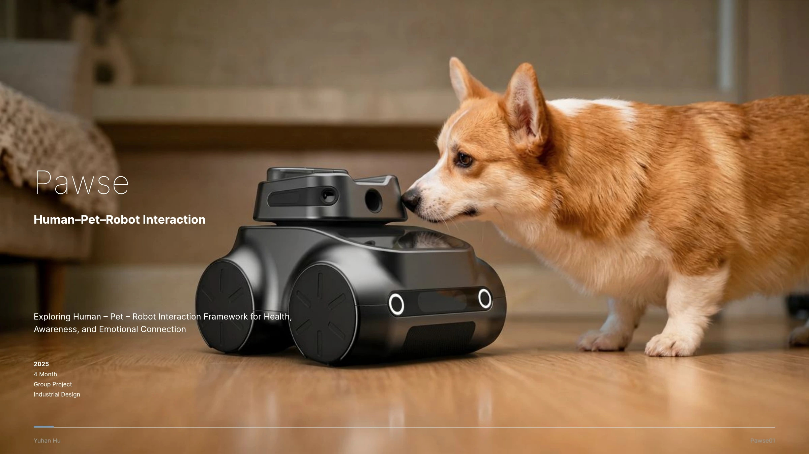
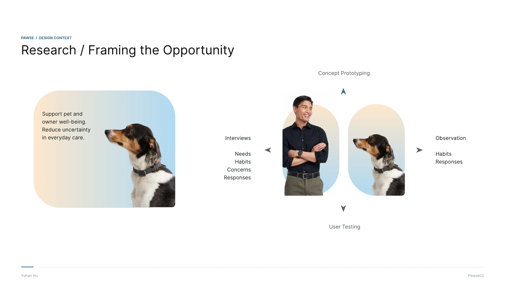
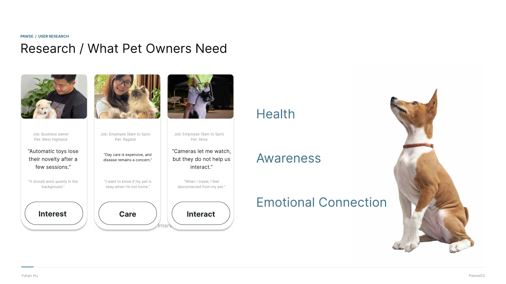
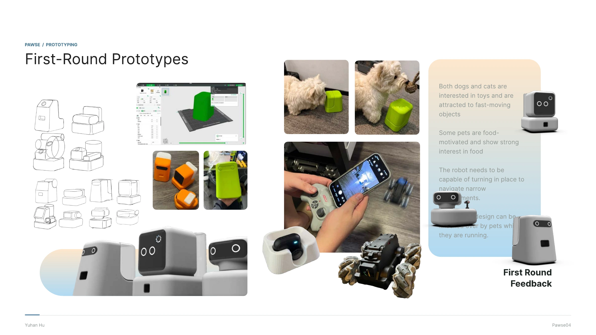
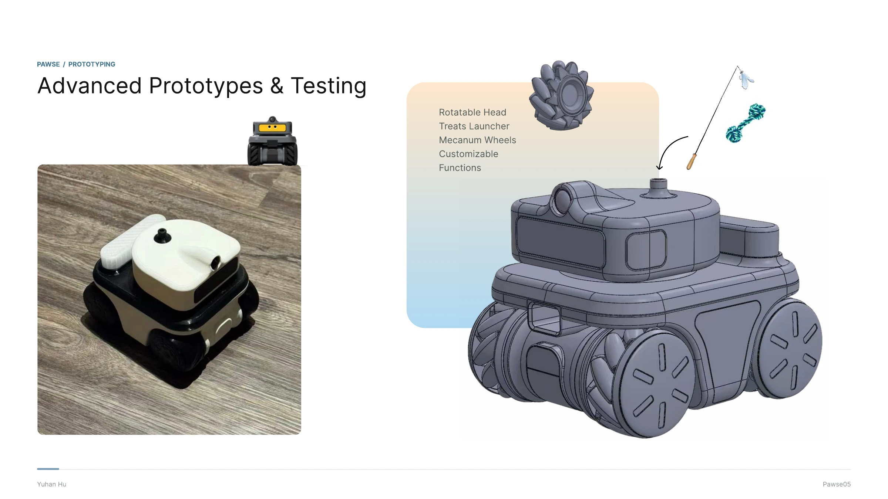
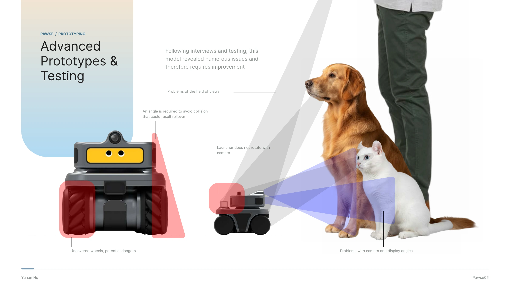
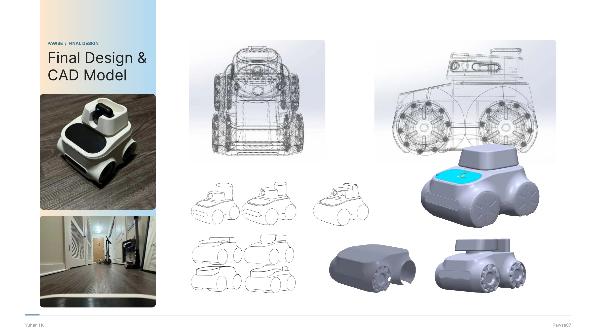
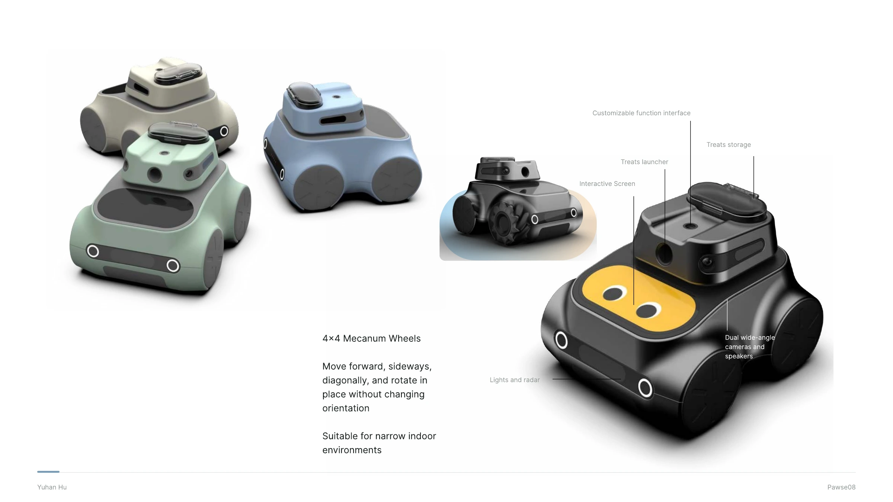
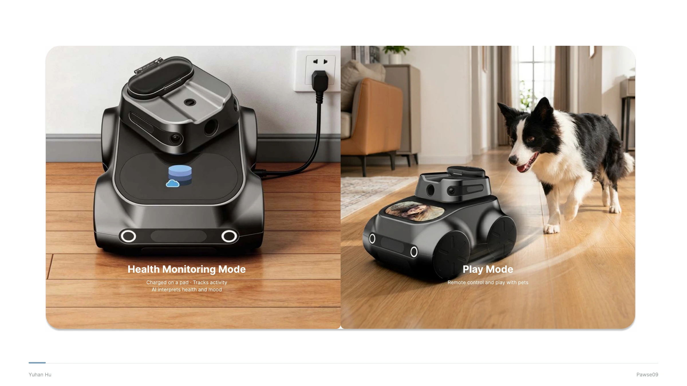
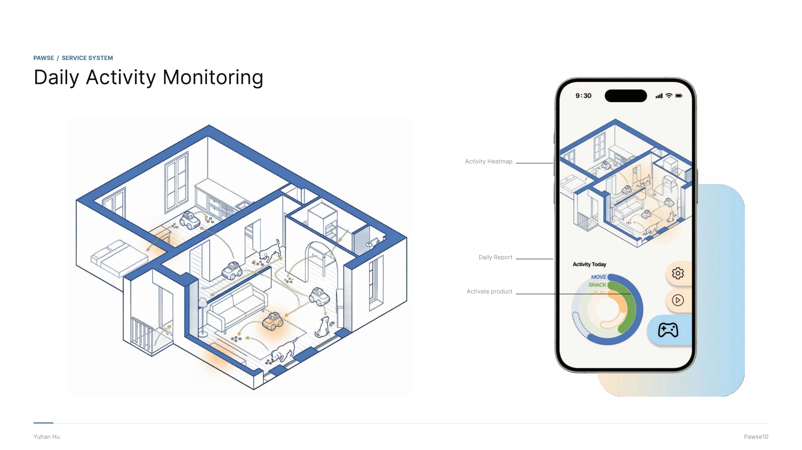

All work
Selected work / 04 · 2025
Pawse
Pawse looks at what pet owners need when they’re away from home. It explores how a robot and its companion service can support play and daily care.
View full process








